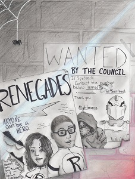
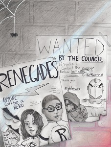

| Autor | Marissa Meyer | >
| Nakladatelství | Egmont |
| Žánr | YA, sci-fi |
| Počet stran | 504 |
| Originální název | Supernova |
| Rok vydání | 2019 |
Tak TOHLE byla prostě supernova. Totální výbuch. Exploze. Wow!! V tomto příspěvku bych ráda něco o této knížce napsala více méně bez velkých spoilerů. Ale nic neslibuju 😏. Ne fajn, určitě se budu snažit. Na začátek ještě řeknu: lidi, MUST READ!! 🖤 Důvod, proč se tahle knížka moc hezky četla , taky byl, že jsem si oblíbila, hm počkat, vlastně všechny postavy 😂. No fajn, nemusela jsem Narcissu. Ale všechny ostatní, ať už záporné postavy - jako třeba Genissa, jsem taky měla ráda. Teda ne úplně ráda, ale bez nich by to nebylo ono! Strašně mě bavil ten vztah Hugh - Simon - Adrian - Max 😂. Skvělá rodinka. Hned by se mohli přihlásit do výměny manželek😂😂😂. A Ruby, Oscar, Adriana, Nova, Honey, Ace, Leroy, Max🖤.... Je jich hodně :D Co dodat, asi jen že jsem se zhroutila až moc brzo 😂😂 Ne vážně, tohle bylo DOSLOVA nadupaný akcí a já jsem někdy skoro nemohla dýchat. Brečela jsem, hystericky se smála a jo, taky jsem v jednu chvíli začala nadšením tancovat na posteli, abych nezapomněla😂. Prostě to bylo skvělý🖤 Celkově k trilogii bych podotkla, že mě bavilo to prostředí! 💙 Gatlon a hrdinové. 🖤 Hate-to-love romantika mi tu taky moc sedla, stejně jako odlehčující rozhovory mezi Sketchovým týmem. To mi připomíná, Oscar je prostě borec na romantické řečičky 😂😂 ! Líbilo se mi žeto bylo ze dvou stran, ani jedna dokonalá, ani jedna úplně špatná.Ke konci však Meyerová jednu úplně potopila... Ale i tak. Ace byl padouch.Já bych byla Anarchistka. Za mě je rozhodně lepší vědě že nejste dokonalí a nesnažit se to skrýt. A hlavně - volnost. Než být zlem prolezlá ale itak dokonale se jevící společnost. Musím říct, že jsem si všimla spousty věcí. Třeba už na začátku jsem pochopila skrytou informaci v prologu, ale samozřejmě až do konce jsem si nebyla jistá. A epilog? Wow! Epický závěr. Fakt!🖤
Omrkni i další recenze :)
 
